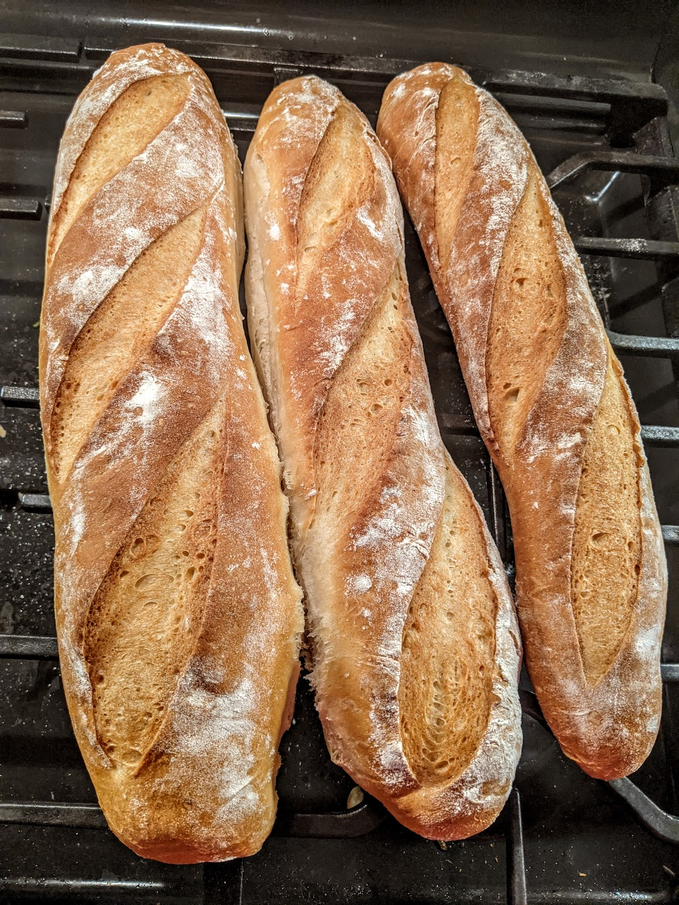

Baguettes

Description
This is a recipe that started during the pandemic of course when everyone was making bread.
It took me awhile to realize that I just needed to weigh the flour to get the measurements to work.
The process is long, but the bread is delicious.
Ingredients
- 1 Packet Dry Yeast
- 1 Cup Warm Water (105 °F)
- 2 Tbsp Honey (Divided)
- 2 tsp Salt
- 1¼ Cups Water
- 160g + 630g of Bread Flour
- Vegetable Oil
- Spray Bottle of Water
Steps
- Bloom Yeast
- Mix warm water and 1 Tbsp honey in a medium bowl.
- Mix in yeast and let sit for 10 minutes.
- Check if mixture is foaming. The yeast may be dead if no bubbles form.
- Make Poolish
- Mix 160g bread flour with bloomed yeast.
- Cover bowl with a towel and let sit for 1 hour.
- Kneed Dough
- Add 2 tsp salt, 1 Tbsp honey, and 1¼ cups water to poolish.
- Add 630g bread flour to a large mixer bowl.
- Add the poolish to mixing bowl.
- Use dough hook attachment to kneed dough for 10-15 mins.
- Turn out dough into large oiled bowl.
- Cover bowl with a towel and let sit for 1.5 hours.
- Divide Loaves
- Turn out dough onto floured surface.
- Divide dough into three parts.
- Take the first part and stretch until resistance is met and fold back over in thirds.
- Give the folded part a quarter turn and repeat stretching and folding.
- Repeat for the remaining two parts.
- Cover parts with a towel and let sit for 10 mins.
- Using finger tips, press out each part to lengthen the loaf.
- Starting at one end, roll the loaf and pinch the bottom together to further lengthen and shape the loaf.
- Place parchment paper on baking sheet folding to create dividers for the three loaves.
- Place loaves on baking sheet, cover with a towel, and let sit for 40 minutes.
- Bake
- Place a sheet pan with water on the bottom of the oven.
- Preheat over to 450 °F (with a baking stone if you have one).
- Sprinkle flour on loaves and score deeply. (Don't be afraid!)
- Place sheet with loaves in over and spray sides of oven with liberal amount of water to make steam.
- Reduce heat to 350 °F and bake for 20 mins.
- Spray water on the sides of the oven again after 7 mins.
- Remove loaves from sheet and bake on stone (or rack) for as long as you dare. See picture for a good color goal.
Return to Recipe List